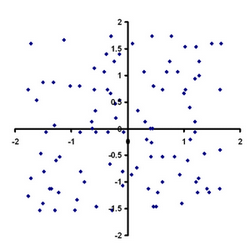
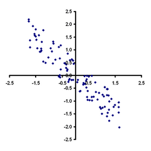
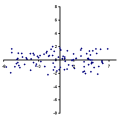

Cette proglet est destinée à construire des programmes permettant de reconnaître des visages.
Un processus de reconnaissance de visage est la méthode d'analyse en composantes principales(ACP).
Introduction.
Le principe de la méthode ACP.
On considère que les visages de référence sont des visages de personnes à reconnaître.
Le but est de reconnaître si un visage inconnu est l'un de ces visages.
L'homme est capable de reconnaître un visage avec quelques détails clés, sans voir le visage dans sa totalité.
Cette méthode essaie de reproduire cette capacité en décomposant les visages de référence selon des visages théoriques appelés
visage propres(eigenfaces en anglais).
On considère que tout visage peut se décomposer selon ces visages propres qui sont donc des visages de base. Si les composantes
principales du visage inconnu sont proches des composantes
de l'un des visages de référence alors on pourra considérer que le visage inconnu est identique à ce visage de référence.
Les visages de référence.
Ils se trouvent dans le dossier de travail de la proglet. Il y en a 15 nommés "visage1.jpg" jusqu'à "visage15.jpg"
Ils proviennent du site de l'université de Yales et ont été recadrée pour être adaptée à la reconnaissance
de visages par le méthode d'analyse en composantes principales.
Les outils mathématiques.
La méthode repose sur une étude statistique des pixels de chaque image de référence. Les visages propres sont en réalité
des "directions" privilégiées sur lesquelles sont regroupés les pixels des images de référence.
 Données brutes non corellées.
 Les mêmes données classées selon une direction principale après étude statistique.
 Les mêmes données classées selon une autre direction principale après étude statistique.
Images provenant du site wikipédia
La proglet utilise donc les tableau à une colonne et n lignes encore appelés vecteurs et des tableaux à p colonnes et n lignes
encore appelés
matrices.
Elle est munie de fonctions ou méthodes qui permettent de réaliser les différentes
opérations entre les vecteurs ou entre les matrices.
Travail proposé.
Le travail à réaliser sera de concevoir un programme de reconnaissance de visages utilisant les diverses méthodes
mises à disposition dans la proglet.